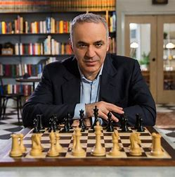
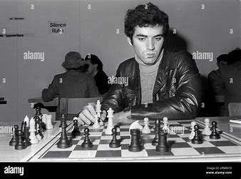

Actualités
Garry Kasparov est toujours actif dans de nombreux domaines, notamment en politique et en écriture. Il continue de défendre les droits de l'homme et de critiquer les régimes autoritaires. Dernièrement, il a fait plusieurs interventions publiques pour défendre la démocratie et les libertés individuelles.
Réalisations
Garry Kasparov, ancien champion du monde d'échecs, est reconnu pour ses nombreuses victoires et son style de jeu innovant. Il a remporté cinq fois le championnat du monde d'échecs et a marqué l'histoire en battant l'ordinateur Deep Blue en 1997.
Événements passés/à venir
Kasparov continue de participer à des événements à travers le monde, que ce soit dans le domaine des échecs ou en tant que conférencier sur la politique et la société. Il a récemment donné une conférence sur l'intelligence artificielle et les menaces politiques actuelles.
Photos et vidéos
Découvrez une sélection de photos et vidéos de Garry Kasparov tout au long de sa carrière. Retrouvez des moments historiques de ses matchs d'échecs, des conférences, et plus encore.
Liens vers d'autres sites de fans
Retrouvez ici des liens vers des sites web et des forums dédiés à Garry Kasparov, ainsi que des ressources pour approfondir vos connaissances sur son parcours.
Réseaux sociaux
Suivez Garry Kasparov sur ses réseaux sociaux pour rester à jour sur ses dernières actions et pensées.